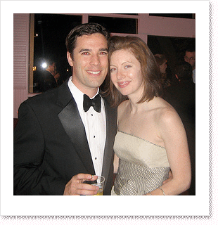
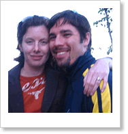
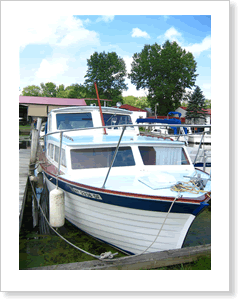

The wedding will happen right around the anniversary of when we first met, which was April 27, 2005. Not planned, but a lovely coincidence! Carter proposed on August 16th. While Carrie was driving up to Syracuse (cursing the traffic on route 81) to visit her family and watch her Dad’s band play at a neighborhood picnic, unbeknownst to her Carter had arrived in Syracuse that very morning on a red eye flight from Seattle, where he was interning for Microsoft.

As Carrie got closer to Syracuse, her Mom called with a strange request to pick up her brother’s guitar amplifier, which was on the family boat in a marina close to her parents’ home. Her Mom insisted that Carrie pick her up first, and then proceed to the marina, because Carrie was apt to break the amp. Irritated, Carrie resolved to go directly to the marina instead. Her Dad called a few minutes later and assured her that she would have no problem picking up the amp by herself (thanks, Dad).
Throughout most of this, Carter was nervously pacing (and reading the Economist, of course) on the boat, named “Shirley K” after Carrie’s paternal Grandmother, and in the family since 1966. Carter worked with Carrie’s Dad to find a meaningful and memorable place near family to propose, because he is so amazingly considerate! Had Carrie known about all this, perhaps she would have skipped her run and leisurely coffee she enjoyed before starting her drive from DC that morning.

When Carrie arrived at the marina and stepped on the boat, she thought she was dreaming when she saw Carter sitting there, a feeling that continued for a few days. Soon he was down on one knee, and asked her to marry him. Of course she said yes! It was an incredible moment and such a great day, being able to share it with family.
We’re so excited that many of you will be coming all the way to Austin for our wedding. It’s going to be a great, fun party with family and friends and we can’t wait. We understand that not everyone will be able to make the trip, and we will be wishing you well from afar.
Feel free to sign our guest book.
Recent Comments